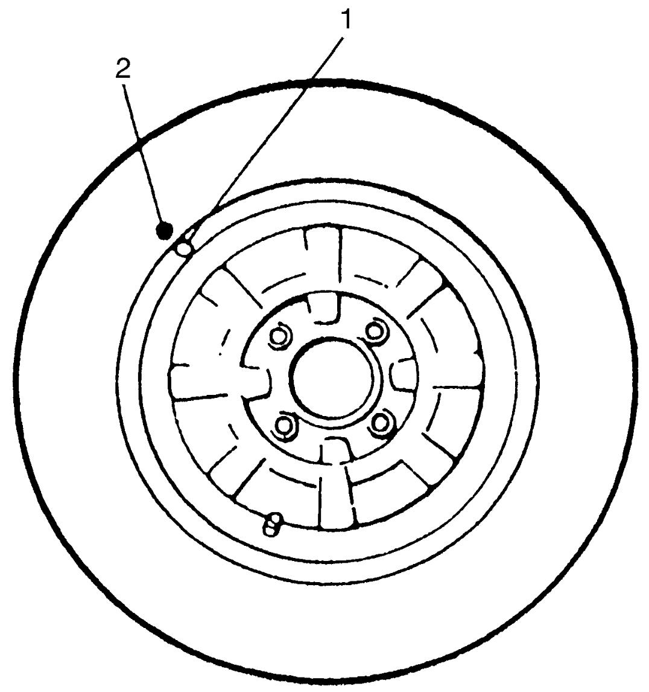

2D
| Matched Tire and Wheel Description (for Vehicle Equipped with Steel Wheel) |
Tires and wheels are match mounted at the assembly plant.
This means that the radially stiffest part of the tire, or “high spot”, is matched to the smallest radius or “low spot” of the wheel.
This is done to provide the smoothest possible ride.
The “high spot” of the tire is originally marked by paint dot on the outboard sidewall. This paint dot will eventually wash off the tire.
The “low spot” of the wheel is originally marked by paint dot on the wheel rim-flange. Properly assembled, the wheel rims’ paint dot (1) should be aligned with the tires’ paint dot (2) as shown in figure.
Whenever a tire is dismounted from its wheel, it should be remounted so that the tire and wheel are matched. If the tire’s paint dot (2) cannot be located, a line should be scribed on the tire and wheel before dismounting to assure that it is remounted in the same position.

 "Expand image")